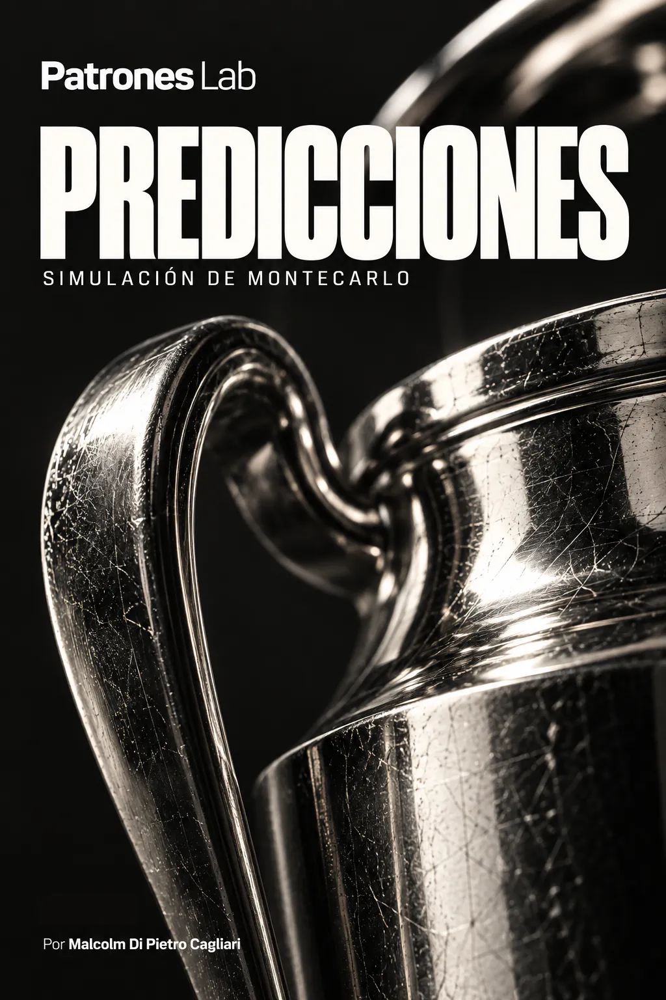

ANALYSE SPORTIVE · PROJET 20

Projet 19 · Analyse sportive
Pronostics Ligue des champions 2026/27
Le projet estime les probabilités des matchs et de qualification dans la phase de ligue de la Ligue des champions 2026/27. Il combine un modèle de buts suivant une loi de Poisson et 1 000 000 de simulations de Monte-Carlo. Le résultat réunit des projections de points, de positions et de chances de qualification directe en huitièmes, d’accès aux barrages ou d’élimination.
CONTEXTE ET OBJECTIF
Le projet analyse la phase de ligue de la Ligue des champions 2026/27 pour estimer les résultats possibles des matchs et le classement final des 36 équipes. Le travail combine deux étapes : un modèle statistique qui calcule les buts attendus et les probabilités des scores exacts, et une simulation de Monte-Carlo qui projette les issues possibles de la compétition.
La base de travail a été constituée à partir des résultats de la Ligue des champions, de la Ligue Europa et de la Ligue Conférence des saisons 2021/22 à 2025/26. Les données ont été préparées et validées pour travailler avec les équipes, les buts marqués et encaissés, et le statut à domicile ou à l’extérieur. Ces informations servent à estimer les forces offensives et défensives ainsi que l’effet du jeu à domicile.
Le calendrier de la Ligue des champions 2026/27 et les résultats progressivement intégrés complètent le scénario de chaque mise à jour. Les matchs déjà disputés apportent leurs résultats réels et le modèle calcule les probabilités des rencontres restantes. Les simulations estiment les chances de terminer aux places 1 à 8, d’accéder aux barrages depuis les places 9 à 24 ou d’être éliminé aux places 25 à 36.
MODÈLE ET SIMULATION
Estimation de l’attaque, de la défense et de l’avantage à domicile
Les buts marqués et encaissés lors des matchs historiques servent à estimer la force des équipes. Les buts marqués renseignent sur l’attaque ; les buts encaissés, sur la défense. Chaque résultat est analysé avec l’adversaire et le statut à domicile ou à l’extérieur, car les forces des deux équipes interviennent dans l’issue d’une même rencontre.
L’estimation repose sur une régression de Poisson. Le modèle ajuste conjointement les coefficients d’attaque, de défense et d’avantage à domicile pour expliquer les buts observés. Les matchs les plus récents reçoivent davantage de poids grâce à une pondération temporelle. Une régularisation est également appliquée pour modérer les estimations extrêmes et les stabiliser, notamment lorsqu’une équipe dispose de moins d’historique. L’ajustement et la capacité prédictive ont été évalués par des validations temporelles.
Ces coefficients permettent de calculer les buts attendus de chaque match. Pour l’équipe à domicile, on combine son attaque, la défense de l’équipe visiteuse, le niveau général de buts et l’avantage à domicile. Pour l’équipe visiteuse, on combine son attaque, la défense de l’équipe à domicile et le niveau général. La fonction exponentielle transforme cette combinaison en une espérance de buts positive.
Buts attendus par équipe
λL = exp(β₀ + βH + AL − DV)
λV = exp(β₀ + AV − DL)
λ à domicile et λ à l’extérieur expriment les buts attendus de chaque équipe. A représente la force offensive, D la force défensive, β₀ le niveau général de buts et βH l’effet du jeu à domicile.
À chaque mise à jour des résultats, le modèle réestime les coefficients et calcule de nouvelles espérances de buts pour les matchs restant à jouer.
Calcul des probabilités des matchs
Pour chaque équipe, la loi de Poisson transforme les buts attendus en probabilités de marquer zéro, un, deux buts ou davantage. La valeur de λ détermine la répartition de cette probabilité entre les différents nombres de buts possibles. Chaque match possède ainsi une distribution de buts pour l’équipe à domicile et une autre pour l’équipe visiteuse.
Loi de Poisson
P(X=k) = e^(-λ) λ^k / k!
X est le nombre de buts d’une équipe, k est l’une de ses valeurs possibles et λ représente ses buts attendus.
Les deux distributions sont combinées pour calculer la probabilité de chaque score exact, comme 0-0, 1-0, 1-1 ou 2-1. Ce calcul suppose l’indépendance entre les buts de l’équipe à domicile et de l’équipe visiteuse, conditionnellement aux buts attendus de chacune.
Probabilité d’un score exact
P(H=h, A=a) = P(H=h) · P(A=a)
H et A désignent les buts de l’équipe à domicile et de l’équipe visiteuse. La probabilité du score exact h-a s’obtient en multipliant la probabilité que l’équipe à domicile marque h buts par celle que l’équipe visiteuse en marque a.
Les probabilités des scores exacts sont ensuite regroupées selon l’issue du match. La somme des scores où l’équipe à domicile marque davantage de buts correspond à la victoire à domicile ; ceux qui comportent autant de buts forment le match nul et les autres correspondent à la victoire à l’extérieur.
Victoire à domicile, match nul et victoire à l’extérieur
P(L) = somme P(h,a), h > a
P(E) = somme P(h,a), h = a
P(V) = somme P(h,a), h < a
L désigne une victoire à domicile ; E, un match nul ; V, une victoire à l’extérieur. Chaque probabilité additionne les scores exacts qui remplissent cette condition.
La même matrice permet d’identifier le score exact le plus probable et de calculer les chances de dépasser 2,5 buts ou de voir les deux équipes marquer.
Simulation de Monte-Carlo de la phase de ligue
La phase de ligue comprend 36 équipes et 144 matchs, avec huit matchs par équipe. Chaque simulation conserve les résultats réels des rencontres déjà disputées. Pour les matchs restants, des scores exacts sont générés à partir des distributions de Poisson calculées pour chaque rencontre.
Un classement est établi à partir des résultats réels et simulés. Trois points sont attribués pour une victoire et un pour un match nul, les buts marqués et encaissés sont additionnés et la différence de buts est calculée. Le classement final utilise une approximation des critères sportifs de départage inclus dans le modèle, avec une résolution aléatoire lorsque des égalités subsistent.
La procédure est répétée 1 000 000 de fois. Chaque simulation produit un classement complet ; ensemble, les simulations forment des distributions de points et de positions pour toutes les équipes. Les probabilités sont estimées en comptant la fréquence d’apparition de chaque résultat étudié.
Probabilité estimée par simulation
P(A) ≈ Nₐ / N
N = 1.000.000
N représente le nombre total de simulations et Nₐ indique combien remplissent l’événement étudié. Le rapport entre ces deux quantités est la probabilité estimée.
Pour chaque équipe, on compte les simulations où elle termine aux places 1 à 8, 9 à 24 ou 25 à 36. Ces fréquences deviennent les probabilités de qualification directe en huitièmes, d’accès aux barrages et d’élimination. Les mêmes simulations fournissent aussi les points attendus et les intervalles de positions possibles.
LIVRABLES ET APPRENTISSAGES
Les sorties du projet comprennent un résumé par équipe avec les probabilités de terminer dans le Top 8, de disputer les barrages ou d’être éliminée. Elles incluent aussi les points et positions attendus, les médianes et les percentiles montrant la répartition des résultats des simulations. Les visualisations permettent de comparer les équipes et d’observer les différences entre leurs scénarios.
L’analyse présente également des informations par match : buts attendus de l’équipe à domicile et de l’équipe visiteuse, probabilités de victoire, de match nul ou de défaite, score exact le plus probable, plus de 2,5 buts et les deux équipes marquent. Pour la qualification, les distributions de points aux positions de coupure et les probabilités d’atteindre chaque zone selon les points obtenus sont étudiées.
Chaque mise à jour intègre les résultats réels récents, réestime les forces offensives et défensives, calcule les probabilités des matchs restants et relance Monte-Carlo. Les scénarios sont identifiés par leur date de référence, ce qui permet de comparer l’évolution des chances de qualification, des points attendus et des positions projetées.
Le projet intègre la préparation et la validation des données, l’estimation des forces offensives et défensives, le calcul des probabilités des scores exacts et la simulation de la phase de ligue. À mesure que de nouveaux matchs sont intégrés, ce processus permet d’actualiser les projections et de présenter aussi bien l’espérance centrale de points et de positions que leur variabilité entre les simulations.